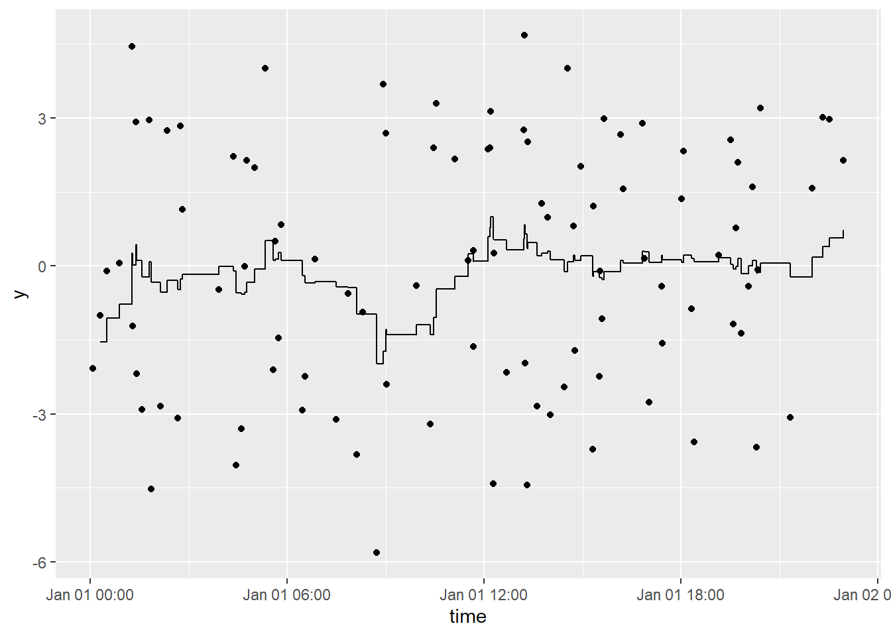

The goal of tbrf is to provide time-window based rolling statistical functions. The package differs from other rolling statistic packages because the intended use is for irregular measured data. Although tbrf can be used to apply statistical functions to regularly sampled data, zoo, RcppRoll, and other packages provide fast, efficient, and rich implementations of rolling/windowed functions.
An appropriate example case is water quality data that is measured at irregular time intervals. Regulatory compliance is often based on a statistical average measure or exceedance probability applied to all samples collected in the previous 7-years. tbrf can be used to display regulatory status at any sample point.
tbrf identifies the previous n measurements within the specified time window, applies the function, and outputs a variable with the result of the rolling statistical measure.
Installation
tbrf is available on CRAN:
install.packages("tbrf")
The development version is maintained on github and can be installed as:
install.packages(remotes)
remotes::install_github("mps9506/tbrf")Available Functions
tbr_binom: Rolling binomial probability with confidence intervals.tbr_gmean: Rolling geometric mean with confidence intervals.tbr_mean: Rolling mean with confidence intervals.tbr_median: Rolling median with confidence intervals.tbr_misc: Accepts user specified function.tbr_sd: Rolling standard deviation.tbr_sum: Rolling sum.
Example
Plot a rolling 1-hour mean:
library(tbrf)
library(dplyr)
library(ggplot2)
library(ggalt)
y = 3 * sin(2 * seq(from = 0, to = 4*pi, length.out = 100)) + rnorm(100)
time = sample(seq(as.POSIXct(strptime("2017-01-01 00:01:00", "%Y-%m-%d %H:%M:%S")),
as.POSIXct(strptime("2017-01-01 23:00:00", "%Y-%m-%d %H:%M:%S")),
by = "min"), 100)
df %
tbr_mean(y, time, "hours", n = 1) %>%
ggplot() +
geom_point(aes(time, y)) +
geom_step(aes(time, mean))
Plot a rolling 3-hour mean:
df %>% tbr_mean(y, time, "hours", n = 3) %>% ggplot() + geom_point(aes(time, y)) + geom_step(aes(time, mean))

Contributing
Please note that this project is released with a Contributor Code of Conduct. By participating in this project you agree to abide by its terms.
License
tbrf code is released under GPL-3 | LICENSE.md
binom_ci() is an implementation of code licensed under GPL (>=2) by Frank Harrellâs Hmisc package.
Test Results
library(tbrf) date() ## [1] "Fri Apr 10 08:24:50 2020" devtools::test() ## v | OK F W S | Context ## / | 0 | core functions work in piped workflow- | 1 | core functions work in piped workflow- | 5 | core functions work in piped workflowv | 6 | core functions work in piped workflow [0.3 s] ## / | 0 | core functions return expected errors and messagesv | 7 | core functions return expected errors and messages ## / | 0 | core functions return expected structures and values\ | 2 | core functions return expected structures and values/ | 4 | core functions return expected structures and values- | 5 | core functions return expected structures and values\ | 6 | core functions return expected structures and valuesv | 6 | core functions return expected structures and values [1.2 s] ## / | 0 | internal statistical functions return expected values| | 3 | internal statistical functions return expected values- | 5 | internal statistical functions return expected valuesv | 11 | internal statistical functions return expected values [0.3 s] ## ## == Results ========================================== ## Duration: 1.9 s ## ## OK: 30 ## Failed: 0 ## Warnings: 0 ## Skipped: 0